導論：從生物到抽象的地圖
▼這一章在講什麼：一張從生物到深度學習的地圖
人工神經網路是現代機器學習裡最有力量的工具之一，舉凡電腦視覺、自然語言處理，背後都靠它。而這些看似複雜的系統，核心其實是一個很簡單的運算單元——受到生物神經元啟發的「人工神經元」。要搞懂深度學習，就得先搞懂這個基礎積木，以及它如何一步步演化過來。這一章就是這張地圖。
全章的敘事是一條清楚的四段結構，跟著走就不會迷路：
- 從 Perceptron 出發（§2）：Perceptron 是神經網路史上最早、也最有影響力的模型之一。它雖然簡單，卻帶出了幾個貫穿全書的關鍵概念——加權輸入、激活函數、以及根據回饋（錯誤）更新權重的學習規則。
- 推進到 MLP（§2 後段）：Perceptron 有個致命傷——它無法解像 XOR 這類非線性分類問題。這個限制推動了更具表達力的模型誕生，也就是 Multi-Layer Perceptron（MLP）／前饋神經網路，它能把輸入疊成多層，畫出更複雜的決策邊界。
- 補充模型（旁支）（§3）：ADALINE、logistic regression、RBF 網路、SOM 等模型，不是主線，但提供寶貴的歷史與概念脈絡，幫你把神經網路放進更廣的早期機器學習光譜裡。
- UAT 收尾（§4）：Universal Approximation Theorem（萬有逼近定理）保證：只要有足夠的神經元，神經網路就能把一大類函數逼近到任意精度——這就是「表達能力」的理論保證。
為什麼一定要先學 Perceptron
你可能會想：都 2020 年代了，還學一個 1958 年的老古董幹嘛？因為 Perceptron 把深度學習的「三根支柱」一次示範得清清楚楚：
- 加權輸入（weighted inputs）：每個輸入乘上一個權重再相加，權重大小代表這個輸入有多重要。
- 激活函數（activation function）：對加權和做一個「開關」式的轉換，決定神經元要不要「發火」。
- 權重更新（weight update）：根據預測錯誤，回饋式地調整權重——這就是「學習」的雛形。
只要掌握了這三件事，後面 MLP 的所有內容，不過是把這個單元「疊很多層」、再把激活函數換成更平滑的非線性函數而已。
一張伏筆：XOR 為什麼是轉捩點
本章最常被拿出來講的例子是 XOR：當兩類資料沒辦法用「一條直線」切開時，單一 Perceptron 就無能為力。這個「非線性可分」的缺口，正是引出多層架構的最大伏筆——留著，後面 kp6 會回頭細講，而 MLP 之所以存在，很大一部分就是為了補上這個洞。
🤖 AI 生圖可用：重繪此示意圖的提示詞（結構化）
WHAT（骨架）: 一張由左至右、階梯逐級升高的四站旅程示意圖：① Perceptron 基石（最矮）→ ② MLP 堆疊（較高，內含多層色條）→ ③ 補充模型（從 MLP 分岔出去的旁支方框，ADALINE/Logistic/RBF/SOM）→ ④ UAT 頂峰（最高，畫一座山形頂峰）。在 Perceptron 與 MLP 之間放一道紅色「XOR 缺口」斷層裂縫，並用一道綠色虛線「橋」跨過它。 WHY（因果或反直覺）: 主線因果是「表達深度隨架構遞增」——單層 Perceptron 最淺、疊多層的 MLP 更深、到 UAT 到達表達力上限。反直覺點：Perceptron 看似已經能學、模型完整，卻被 XOR 這個非線性缺口硬生生擋住；不是因為它不夠努力，而是結構上「單層線性」跨不過，必須靠 MLP 這座橋把層數堆起來，旅程才能繼續。補充模型是主線之外的分岔旁支，不是往上堆，而是往旁邊開花。 MUST show（必備要素）: ① 四站方框按高度遞增排列（Perceptron 最低、UAT 最高）；② 每站標①②③④與名稱；③ ①②之間紅色 XOR 斷層裂縫；④ 斷層上綠色虛線「橋」及「需要橋」標註；⑤ 補充模型用黃色方框從 MLP 側面分岔出去並標「旁支分岔」；⑥ 由左到右的主線箭頭與「深度↑」註記；⑦ 底部一行反直覺句。 AVOID（禁止）: 不要畫成四個等高方框並排；不要出現任何數學公式或 LaTeX 反斜線；不要把補充模型畫在 UAT 之後；不要漏掉 XOR 缺口與橋；不要讓箭頭方向混亂。 STYLE: flat vector, scientific, white background, teal 主色系（#065f56 深、#0d9488 主、#99f6e4 淺），黃色分岔 #d69e2e、紅色斷層 #e53e3e、綠色橋 #38a169，圓角、粗箭頭、無陰影、無漸層。
本章主線敘事的四段結構，正確順序是？
Perceptron 帶出的三個關鍵概念不包括下列哪一項？
關於 §3 的補充模型（ADALINE、logistic regression、RBF、SOM），正確敘述是？
UAT（萬有逼近定理）在本章的角色是？
生物神經元：Soma、Dendrites、Synapse
▼從一顆活的神經細胞講起
人工神經網路是由「人工神經元」組成的，而這個名字不是隨便取的——它鬆散地受到生物神經元的啟發（loosely inspired）。所以理解真正的生物神經元怎麼運作，能讓我們看懂人工版本在模仿什麼。圖（Fig. 1）畫出了一顆生物神經元的主要構造。
一顆生物神經元有幾個關鍵部件，各司其職：
- Soma（細胞體）：神經元的「本體」，負責把收到的訊號整合起來——可以想成一座城的市中心，所有訊息最後都匯到這裡。
- Nucleus（細胞核）：位於 Soma 內部，存放遺傳物質、調控細胞活動——是細胞的「指揮中心」。
- Dendrites（樹突）：像樹枝一樣的延伸結構，負責接收來自其他神經元的電化學訊號，並把訊號往 Soma 方向傳送——是神經元的「天線」。
- Synapse（突觸）：一個神經元的軸突末端與另一個神經元樹突之間的微小間隙，訊號在這裡以化學方式傳遞——是「神經元之間的接縫」。
閾值觸發：發火或不發火
光知道構造還不夠，關鍵在於機制。當一顆神經元經由樹突與突觸收到鄰居們的訊號後，會在 Soma 裡把這些訊號累積起來。一旦累積的總訊號量超過某個門檻（threshold），神經元就會「發火」（fires）——產生一個沿著軸突（axon）傳遞下去的 action potential（動作電位），把訊息繼續傳給其他神經元；沒超過門檻，就維持沉默。
這個「超過門檻就開、沒超過就關」的閾值式觸發機制，就是接下來人工神經元模型最核心的靈感來源。
從生物到抽象：啟發了什麼
生物神經元「累積訊號 → 超過門檻 → 開關式發火」的流程，被簡化成早期人工神經元的抽象模型：
- 把「接收到的多路訊號」想成多個加權輸入；
- 把「累積總量超過門檻」想成加權和過一個閾值；
- 把「發火或不發火」想成激活函數輸出 0 或 1。
也就是說，生物上的「累積 + 閾值 + 開關」，對應到數學上就是「加權和 + 激活」。這顆 1950 年代前就浮現的想法，就是 kp3 的 McCulloch-Pitts 模型的雛形。
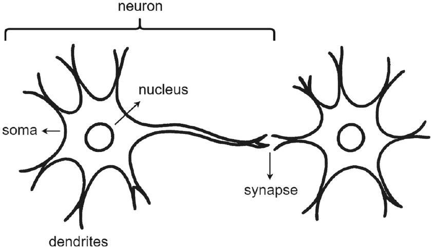
🤖 AI 生圖可用：重繪此示意圖的提示詞（結構化）
WHAT（骨架）: 一棵由左至右的「手繪式」生物神經元示意圖。左側多條樹狀 Dendrites（樹突，分岔、尖端有箭頭）接收來自多顆其他神經元的訊號；中央一顆橢圓 Soma（細胞體，內含小圓 Nucleus 細胞核）；右側一條 Axon（軸突，粗線帶箭頭）往外傳導，末端分岔成數個突觸小泡；Axon 末端與「下一顆神經元」樹突之間留一道 Synapse（突觸）間隙，用黃色虛線與化學符號 ⇄ 表示化學傳遞。上方放一條「多路訊號累積 → 超過門檻 θ？ → 是放電⚡ / 否靜默」的機制帶。 WHY（因果或反直覺）: 因果鏈是「多路輸入各自到達 → 在 Soma 累積 → 累積總量是否超過門檻 → 超過才沿 Axon 放電、否則靜默」。反直覺點：單一輸入再強或再多，只要總量沒跨過門檻，神經元就完全不動作（沉默）；它是「閾值式開關」，不是「越強就越亮」，訊號是累加後做硬性開關，而不是強度連續放大。這正是後續人工神經元激活函數的靈感來源。 MUST show（必備要素）: ① 左側樹狀 Dendrites 帶分岔與箭頭；② 多顆訊號來源圓點；③ 中央 Soma 橢圓內含 Nucleus；④ 右側 Axon 粗線帶箭頭與末端分岔小泡；⑤ Synapse 間隙用虛線＋⇄ 化學符號表示；⑥ 上方「累積 → 超過門檻？ → 放電⚡/靜默」機制帶；⑦ 各構造名稱標籤（Dendrites/Soma/Axon/Synapse）。 AVOID（禁止）: 不要畫成抽象方框流程圖；不要出現任何數學公式或 LaTeX 反斜線；不要把 Axon 畫成沒有箭頭的光禿線；不要漏掉 Synapse 間隙與閾值決策；不要畫成真實生物照片。 STYLE: flat vector, scientific, hand-drawn-ish smooth curves, white background, teal 主色系（#065f56 深、#0d9488 主、#99f6e4 淺），Synapse 用黃色 #d69e2e、放電用紅色 #e53e3e，圓潤曲線、無陰影、無漸層。
生物神經元中，負責把收到的訊號「整合」起來的是哪個構造？
當一顆神經元累積的總訊號量超過門檻時，會發生什麼？
「閾值式觸發」這一生理機制，最接近人工神經元的哪個概念？
人工神經元「loosely inspired by」生物神經元，主要的模仿對象是？
McCulloch-Pitts 模型：首個數學神經元
▼1943 年：第一個把神經元寫成數學的人
1943 年，生理學家 Warren McCulloch 與邏輯學家 Walter Pitts 提出了第一個受生物啟發的神經元數學模型，後人稱之為 McCulloch-Pitts neuron。這是人類第一次嘗試把神經計算「形式化」——把神經元的行為用數學規則寫死。
這個模型很簡單，特點如下：
- 二元輸入、單一二元輸出：有兩個或以上的二元輸入，產出一個二元輸出（圖見 Fig. 2）。
- 閾值激活：只有當輸入的「和」超過某個門檻時才會激活（輸出 1），否則維持 0。
- 等權固定：所有輸入被賦予相等且固定的權重。
- 無學習：行為完全是預先定義好的，不做任何學習——權重不會更新。
它能做什麼：模擬邏輯閘
因為有「閾值」這個開關，McCulloch-Pitts 神經元可以根據輸入的設定與門檻的高低，模擬基本的邏輯運算，例如 AND、OR、NOT 閘。也就是說，這顆「神經元」其實就像一台小型邏輯電路。
公式：加權和 + 激活
數學上，這個模型的輸出寫成（式 (1)）：
$$ o=f\left(\sum_{j=1}^{d} w_{j} x_{j}+w_{0}\right)=f\left(\sum_{j=0}^{d} w_{j} x_{j}\right), \tag{1} $$
其中：
- 輸入訊號 $\left\{x_{i} \in \mathbb{R}\right\}_{i=1}^{d}$；
- 偏置（截距）輸入 $x_{0}=1$；
- 可學習的權重（參數）$\left\{w_{i} \in \mathbb{R}\right\}_{i=0}^{d}$；
- $f(\cdot)$ 是激活函數。
神經元先算輸入的加權和，再套上激活函數 $f$，得到輸出 $o$。在 McCulloch-Pitts 模型中，激活函數是二元階梯函數（binary step），所以輸出 $o$ 只取 $\{0,1\}$ 兩個值。
鷹架小結：它教會我們什麼
McCulloch-Pitts 把「累積訊號、超過門檻就開」的想法，正式翻譯成「加權和 → 閾值激活」的數學形式。但它有兩個先天限制——權重固定、不能學習。下一節的 Perceptron 正是為了解決「不能學習」這道題而誕生的。
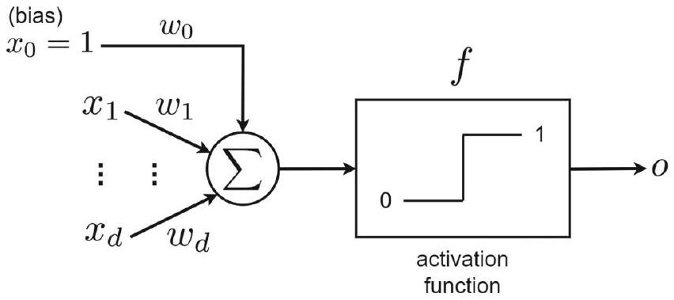
🤖 AI 生圖可用：重繪此示意圖的提示詞（結構化）
WHAT（骨架）: 一張 M-P 神經元示意圖。左側多個二元輸入節點（x₁=1、x₂=0、x₃=1，各標 w=1 等權）以箭頭匯入中央一顆大圓（M-P 神經元，內寫 Σ 與「Σ ≥ θ ?」），再經一道開關箭頭接到右側輸出框（o = 1/0）。下方並列三張小型真值表，分別標「AND θ=2」「OR θ=1」「NOT θ=0.5」及各自 00/01/10/11 對應輸出。 WHY（因果或反直覺）: 因果鏈是「所有輸入以相同權重加總 → 總和是否大於等於閾值 θ → 是就輸出 1、否則輸出 0」，這是個硬性閾值開關，且權重固定、不學習。反直覺點：神經元的「本體」完全一樣，什麼都沒改，只把閾值 θ 換一下，同一顆神經元就變成完全不同的邏輯閘（AND、OR、甚至 NOT）；「會做哪種邏輯」不是藏在神經元裡，而是藏在閾值設定裡。 MUST show（必備要素）: ① 多個二元輸入節點各標 0/1 與等權 w=1；② 等權箭頭匯入中央神經元；③ 神經元內顯示 Σ 與「Σ ≥ θ ?」；④ 右側輸出框標 o=1/0 與開關；⑤ 下方三張真值表並列，標明 AND θ=2 / OR θ=1 / NOT θ=0.5；⑥ 「1943 · 無學習 · 權重固定」註記；⑦ 底部反直覺句。 AVOID（禁止）: 不要出現任何數學公式或 LaTeX 反斜線；不要畫成多個不同造型的神經元；不要把 AND/OR/NOT 畫成三個不同電路；不要漏掉閾值 θ 的標示；不要讓真值表數值與閾值矛盾。 STYLE: flat vector, scientific, white background, teal 主色系（#065f56 深、#0d9488 主、#99f6e4 淺、#ccfbf1 更淺），輸出 1 用綠色 #38a169 強調、閾值比較用紅色 #c53030，圓角、粗箭頭、無陰影、無漸層。
McCulloch-Pitts 模型由誰於何年提出？
McCulloch-Pitts 模型的輸入與輸出特性是？
關於 McCulloch-Pitts 模型的權重，下列何者正確？
式(1) $o=f(\sum_{j=1}^{d} w_{j} x_{j}+w_{0})$ 中，$f$ 在 M-P 模型裡是？
Perceptron 與二元激活：第一個會學習的神經元
▼1958：Rosenblatt 讓神經元學會「改錯」
McCulloch-Pitts 模型有個致命傷——不能學習。1958 年，生理學家 Frank Rosenblatt 在 Cornell Aeronautical Laboratory 提出並實作了一台機器：Perceptron。它不只模仿神經元的結構，更重要的是引入了一條監督式學習規則來調整權重。Rosenblatt 的目標，是做出能模仿人類視覺感知的系統——今天，Perceptron 被公認是現代神經網路的奠基積木。
它有幾個值得記住的背景：
- 二元分類：Perceptron 主要為二元分類設計，這既實用、又正好與數位電腦的二元邏輯契合；就算是多類別問題，也能拆成一堆二元子問題。
- 隨機連接：Rosenblatt 最初的設計強調輸入與輸出神經元之間的隨機連接，因為他相信人類視網膜與視覺皮層是隨機連接的。
- Hebbian 啟發但本質不同：早期靈感來自 Hebbian learning（重複共同激發會增強突觸權重），但 Perceptron 最終採用的是一條監督式學習規則——由帶標籤的資料與分類錯誤驅動，這與古典 Hebbian 學習本質上不同。
當年它還上了新聞。1958 年美國海軍的一場記者會上，Rosenblatt 形容 Perceptron 是智慧機器的可能基礎；之後《紐約時報》甚至宣稱它是「一個能走路、說話、看見、書寫、自我複製、且意識到自己存在的電子電腦之胚胎」。這些誇張說法，既帶來了公眾的興奮，也埋下了日後的懷疑。
結構與資料表示
Perceptron 的結構如圖（Fig. 3）：把輸入做線性組合，再丟進激活函數 $f$。資料是這樣表示的——有 $n$ 筆輸入向量，第 $i$ 筆記作：
$$ \boldsymbol{x}_{i}=\left[x_{i 1}, \ldots, x_{i d}\right]^{\top} \in \mathbb{R}^{d}, $$
其中 $x_{i j}$ 是第 $i$ 筆資料的第 $j$ 個元素，每筆資料有對應的真實標籤 $y_{i}$。
學習規則：錯了就改，對了就停
對每一筆資料 $\boldsymbol{x}_{i}$，Perceptron 算出輸出 $o_{i}$，和真實標籤 $y_{i}$ 比較，再依兩者的差來更新權重。權重與偏置的更新規則（式 (2)）是：
$$ \boldsymbol{w}:=\boldsymbol{w}+\eta\left(y_{i}-o_{i}\right) \boldsymbol{x}_{i}, \quad w_{0}:=w_{0}+\eta\left(y_{i}-o_{i}\right), $$
用 $x_{i 0}:=1$ 把偏置併進去，就濃縮成式 (3)：
$$ \boldsymbol{w}:=\boldsymbol{w}+\eta\left(y_{i}-o_{i}\right) \boldsymbol{x}_{i}, \tag{3} $$
其中 $\eta\gt 0$ 是學習率，$y_{i}\in\{0,1\}$ 是真實標籤，$o_{i}$ 是預測輸出。
batch 版與單樣本版的等價：也可以一次吃一整個 batch 再更新（式 (4)）：
$$ \boldsymbol{w}:=\boldsymbol{w}+\eta \sum_{i=1}^{b}\left(y_{i}-o_{i}\right) \boldsymbol{x}_{i}, $$
其中 $b$ 是 batch size。去掉求和符號，就回到每次只處理單一樣本的式 (5)：
$$ \boldsymbol{w}:=\boldsymbol{w}+\eta\left(y_{i}-o_{i}\right) \boldsymbol{x}_{i}, \quad \forall i \in\{1, \ldots, n\} . \tag{5} $$
直覺：如果預測對了，$o_{i}=y_{i}$，那麼 $y_{i}-o_{i}=0$，權重完全不用更新；只有預測錯（差 $\neq 0$）時，權重才會按錯誤大小成比例地往正確方向調整。
口語化復盤
一句話總結這顆神經元：它比 M-P 模型多了「會看錯誤、會改自己」的能力。把每個樣本送進去，比對「我猜的」和「正確的」，猜錯就照著誤差把權重推一把，猜對就原地不動——這就是監督學習最早的雛形。也正因為它會學習，才值得被稱為現代深度學習的真正起點。
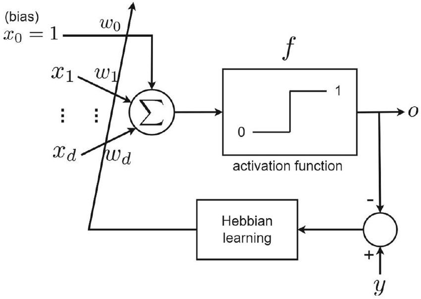
🤖 AI 生圖可用：重繪此示意圖的提示詞（結構化）
WHAT（骨架）: 一張 Perceptron 學習迴路示意圖。左側一個 d 維輸入向量 xᵢ（細直方框，內列 x₁₁…x₁d）；中間一顆 Perceptron 橢圓（內寫 Σ + f，底部畫一個「權重 w」可調旋鈕）；輸入經箭頭進 Perceptron 後輸出 oᵢ，與下方真實標籤 yᵢ 一起進到一個「比較器」方框（標誤差 yᵢ − oᵢ）；比較器再以一條紅色回饋箭頭繞回權重 w 旋鈕。另在角落放一個「Batch 版：一次吃多個樣本再更新」的小面板，把 x₁…x_b 誤差求和。 WHY（因果或反直覺）: 因果鏈是「輸出 oᵢ 與標籤 yᵢ 比較 → 算出誤差 → 誤差不為零才把權重 w 推一把（w:=w+η(yᵢ−oᵢ)xᵢ）→ 權重改變 → 下次輸出更接近標籤」。反直覺點：學習是「由錯誤驅動」的——猜對了（oᵢ=yᵢ，誤差 0）權重就完全靜止、完全不更新；只有猜錯時權重才會動。也就是說，一顆會學習的神經元在「正確」時反而毫無動作，進步只發生在犯錯之後。 MUST show（必備要素）: ① d 維輸入向量 xᵢ 方框；② Perceptron 含權重 w 旋鈕；③ 輸出 oᵢ 與標籤 yᵢ 兩個方框；④ 比較器方框標誤差 yᵢ − oᵢ；⑤ 紅色回饋箭頭繞回權重 w；⑥ 綠色勾「oᵢ=yᵢ → 誤差0 → 不更新」與紅字「有誤差 → 回饋修正」並列對比；⑦ Batch 版面板示意多樣本求和；⑧ 底部反直覺句。 AVOID（禁止）: 不要出現任何數學公式或 LaTeX 反斜線；不要畫成單向管線（缺回饋箭頭就不是學習迴路）；不要把正確情況畫成也在更新權重；不要漏掉比較器與誤差；不要讓紅色與綠色混淆。 STYLE: flat vector, scientific, white background, teal 主色系（#065f56 深、#0d9488 主、#99f6e4 淺、#ccfbf1 更淺），標籤用黃色 #d69e2e、錯誤/回饋用紅色 #e53e3e、正確用綠色 #38a169，圓角、粗箭頭、無陰影、無漸層。
Perceptron 於 1958 年由誰在哪裡提出？
Perceptron 的學習規則與 Hebbian learning 的關係是？
式(3) $\boldsymbol{w}:=\boldsymbol{w}+\eta(y_{i}-o_{i})\boldsymbol{x}_{i}$ 中，當 $o_{i}=y_{i}$ 時會發生什麼？
batch 版更新式 (4) 與單樣本版式 (5) 的關係是？
kp5 (badge 2.5) Signum 激活的 Perceptron：更新規則與兩種推導
▼一、是什麼：把二元步階換成符號函數
上一節的 Perceptron 用二元步階（Binary Step）當激活，輸出只有 0 或 1。這一節我們把它換成 signum（符號）函數：輸出變成 +1 或 −1，也就是讓類別標籤直接「有正負之分」。這樣一來，標籤 yi ∈ {+1, −1}，更新規則可以寫得更漂亮。
二、為什麼：錯誤的修正要「往正確方向推一把」
還記得二元版本的更新嗎？w := w + η (yi − oi) xi。當輸出用 ±1 表示時，正確與錯誤只分兩種：標籤跟輸出一樣（yi = oi），或標籤跟輸出相反（yi ≠ oi）。於是可以把「對或錯」寫進一個判別條件，得到更新規則 (6) 與 (7)：
- 權重：
w := w + 2η yi xi，若oi ≠ yi；否則不動。 - 偏置：
w0 := w0 + 2η yi，若oi ≠ yi；否則不動。
係數「2」不是魔法，它是 yi − oi 在 ±1 反號時必然等於 ±2 的自然結果（下面推導會看到）。批處理（batch）時把所有樣本的修正累加，用指示函數 I(oi ≠ yi) 當「開關」：w := w + 2η Σi=1..b yi xi I(oi ≠ yi)（式 8），偏置同理（式 9）。
三、第一種推導：代數化簡（四種情況全列出）
從原更新 w := w + η(yi − oi) xi 出發，yi, oi ∈ {−1, 1} 只有四種組合：
| yi | oi | η(yi − oi) xi | 結果 |
|---|---|---|---|
| +1 | +1 | 0 | 不更新（正確） |
| +1 | −1 | 2ηxi = 2ηyixi | 更新 |
| −1 | +1 | −2ηxi = 2ηyixi | 更新 |
| −1 | −1 | 0 | 不更新（正確） |
可以看到：只要 oi ≠ yi，η(yi − oi) xi = 2ηyixi，這就完整推出 (6)(7)(8)(9)。
四、第二種推導：梯度上升／下降的幾何直覺
決策邊界是一條直線（在 Rd 是超平面）：wT x + w0 = 0（式 10）。因為邊界上兩點都滿足此式，相減得 wT(x1 − x2) = 0，所以 w 是決策邊界的法向量（normal vector）（式 11、Fig.5）。
取邊界上一點 x0，任一點 x 到邊界的距離，在 w 為單位向量時是 d = wT(x − x0) = wTx + w0（式 12）。距離該非負，所以取絕對值 d = |wTx + w0|——但絕對值不平滑、不可微，無法梯度優化。破解法是「用標籤去掉絕對值」：若 y=+1 則 wTx + w0 > 0，若 y=−1 則 < 0（式 13），因此對正確分類的點恆有 d := y(wTx + w0) ≥ 0（式 14）。
兩種目標殊途同歸：
- 最大化「正確分類點」的距離（梯度上升）：
distance = Σ yi(wTxi + w0)，梯度是∂distance/∂w = Σ yixi，於是w := w + η Σ yixi（式 15）。 - 最小化「錯誤分類點」的距離（梯度下降）：把正確點的距離乘 −1 得 error = −Σ yi(wTxi + w0)，梯度下降仍得
w := w + η Σ yixi（式 16）。
兩條路都給出同一個更新規則，且只要對「錯分」（oi ≠ yi）的樣本做，就回到 (8)(9)。Fig.6 把「w 是法向量、點到線的距離」畫得清清楚楚，是這套幾何直覺的核心。整體思路就是 (10)→(16)：定義邊界→證明法向量→算距離→去掉絕對值→梯度上升/下降。
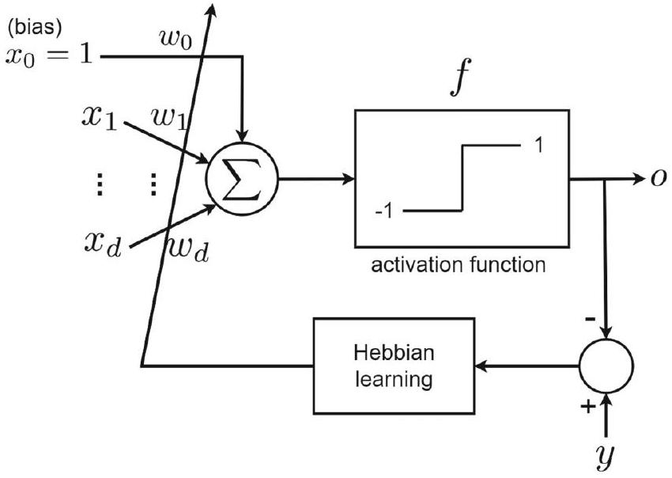
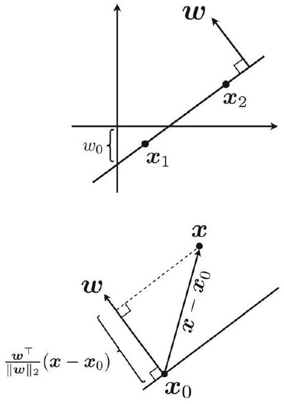
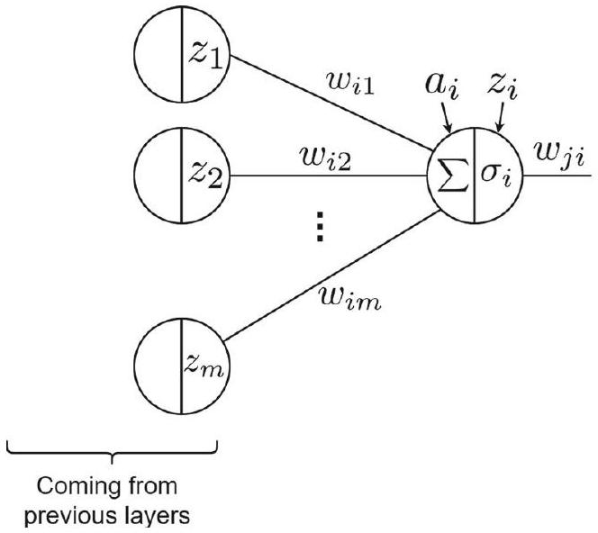
🤖 AI 生圖可用：重繪此示意圖的提示詞（結構化）
# kp5 示意圖 prompt — Signum 兩種推導殊途同歸 (badge 2.5) ## WHAT 左右對比的兩欄示意圖，展示 Signum 激活的參數更新規則可用「代數」與「幾何」兩條路徑推導，最終合流到同一公式。左欄是「代數推導」：以 2×2 表格列 (±1) 的四種 (o_i,y_i) 組合，只有 o_i≠y_i 的兩格需要更新且合併為同式；右欄是「幾何推導」：畫決策邊界、法向量 w ⊥ 邊界、點到邊界的帶符號距離 y(wᵀx+w₀)（正確綠 / 錯誤紅），再把「梯度上升」與「梯度下降」兩個箭頭合流到同一更新式。 ## WHY Signum 更新 w:=w+2η·y_i·x_i 的來源有兩套說法，學生常只記得其一。用「四情況併化簡」與「法向量/距離」並列，讓兩條獨立推導路徑在視覺上匯入同一個公式，強化「殊途同歸」的核心直覺：不管從錯誤樣本分類還是從距離/梯度看，得到的修正完全相同。 ## MUST - 兩欄標題清楚標示「代數推導」「幾何推導」。 - 左欄 2×2 共四格組合；其中「錯誤」（o≠y）兩格須有醒目底色（teal 高亮），「不更新」兩格用淡色。 - 左欄底部給出目標公式 w := w + 2η y_i x_i，並註明「僅當 o_i≠y_i」。 - 右欄必須同時畫出：決策邊界直線、垂直於邊界的法向量 w、至少兩組點分別用綠/紅表示 y(wᵀx+w₀)>0 與 <0。 - 右欄下方要有「梯度上升」「梯度下降」兩個箭頭合流到同一個公式框。 - 兩欄公式框之間用一條虛線/箭頭連接並標「殊途同歸」。 - 整張圖用 teal 主題配色。 ## AVOID - 不要只畫一欄；缺失任何一條推導路徑即失敗。 - 不要把法向量畫成與邊界平行（法向量必須垂直）。 - 不要省略「僅當 o_i≠y_i」這個更新條件。 - 不要在圖中引入非 Signum 的符號或數值運算。 ## STYLE - viewBox 720×360，SVG 直接內嵌樣式，無外部依賴。 - teal 主題：主色 #0d9488 / #14b8a6 / #0f766e / #134e4a，淺底 #f0fdfa/#ccfbf1，紅 #ef4444、綠 #16a34a、灰 #94a3b8。 - 公式用等寬字型（mono），中文標籤用無襯線字型；約 60–90 行。 - 乾淨簡潔，資訊密度適中，一圖即可講完「兩路合流」。
| yᵢ | oᵢ | η(yᵢ−oᵢ)xᵢ | 化簡 | 結果 |
|---|---|---|---|---|
| +1 | +1 | η(1−1)xᵢ = 0 | 0 | 不更新（正確） |
| +1 | −1 | η(1−(−1))xᵢ = 2ηxᵢ | 2ηyᵢxᵢ | 更新 |
| −1 | +1 | η(−1−1)xᵢ = −2ηxᵢ | 2ηyᵢxᵢ | 更新 |
| −1 | −1 | η(−1−(−1))xᵢ = 0 | 0 | 不更新（正確） |
Signum 激活的 Perceptron 中，輸出 o_i 的取值是？
在 y_i,o_i ∈ {−1,1} 且分類錯誤（o_i≠y_i）時，η(y_i−o_i)x_i 化簡為？
為何要把距離 d=|w^T x+w_0| 改寫成 d:=y(w^T x+w_0)？
式 (16) 的最小化「錯分距離」與式 (15) 的最大化「正確距離」，最後得到的更新規則為何？
kp6 (badge 2.6) Perceptron 的限制：XOR 反例與泛化問題
▼一、是什麼：Perceptron 天生只能做「線性可分」
Perceptron 的決策邊界是一條直線（或超平面），所以它只適合「二元分類 + 資料線性可分」的問題。一旦資料需要彎曲的邊界，它就無能為力。
二、為什麼：Minsky & Papert 的 XOR 反例與「寒冬」
1969 年，Minsky 與 Papert 在經典著作 Perceptrons 中嚴格證明：Perceptron 無法處理需要非線性決策邊界的問題，最著名的反例就是 XOR（異或）。XOR 的四個輸入點，+1 與 −1 兩類交叉分佈，任一條直線都無法把它們分開，而 Perceptron 的邊界偏偏是直線。這個打擊讓神經網路研究熱情「急凍」了許多年——史稱神經網路的第一次寒冬。
當時大家其實已猜測「把多個 Perceptron 堆疊成多層架構」或許能繞過非線性限制，但沒有高效率的訓練演算法，多層網路不知道該怎麼學，進展因此停滯。
三、怎麼用：即使線性可分，泛化也很差
別以為資料可分就萬事大吉。Perceptron 的最終邊界取決於隨機初始權重：初始值不同，收斂到的決策邊界就不同（Fig.7a）。有些邊界會「貼著某一類資料」劃過去（Fig.7b），雖然在訓練集上準確率 100%，對沒見過的新資料卻常常誤判——也就是泛化能力差。
四、對策：ADALINE 登場，但非線性才是王道
為了改善泛化、並處理不可分的資料，Widrow 與 Hoff 在 1960 年提出 ADALINE（Adaptive Linear Neuron）。它改用 LMS（Least Mean Squares）演算法最小化一個連續的損失函數（不像 Perceptron 的「錯分個數」是離散的），因此收斂更穩定、泛化更好。
但 ADALINE 並未成為深度學習的基石——它的線性輸出不適合深層架構所需的階層式非線性特徵表示。反觀 Perceptron，正因為它有非線性激活，才適合當作多層網路的基本單位。所以結論是：Perceptron 的非線性激活，才是現代神經網路的雛形；ADALINE 的故事留在 §3 詳細講。
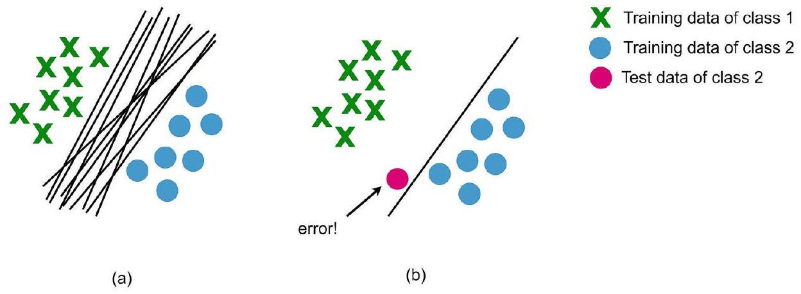
🤖 AI 生圖可用：重繪此示意圖的提示詞（結構化）
# kp6 示意圖 prompt — Perceptron 的限制與寒冬 (badge 2.6) ## WHAT 上下兩段的示意圖。上半段左右兩個面板：左面板「線性可分」畫兩類點被直線分開，並對比「居中邊界（泛化好）」與「貼類邊緣（泛化差）」兩種直線；右面板「XOR」畫四個點 (0,0)(0,1)(1,0)(1,1)，用兩條不同斜率的虛線並以紅叉標示「沒有任何一條直線能分開」。下半段是一條時間軸：1958 樂觀（成功）→ 1969 寒冬（雪花標記，熱情冷卻，Minsky & Papert）→ 主軸末端「非線性激活 → 多層 MLP 復甦」；並在軸上分出 1960 ADALINE（連續損失）的並行支線。 ## WHY 單層 Perceptron 的致命限制有兩層反直覺：一、線性可分不代表泛化好（邊界貼著類別邊緣時泛化差）；二、XOR 如此簡單的四點，單層卻無解。時間軸要表達「1958 樂觀→1969 寒冬→MLP 復甦」的歷史起伏，並點出 ADALINE 用連續損失另闢蹊徑，引出「需要多層 + 非線性」的動機。 ## MUST - 上半左面板：兩類點散布 + 一條乾淨分開的實線（居中邊界，標「泛化好 ✓」）+ 一條虛線（貼類邊緣，標「泛化差 ✗」）。 - 上半右面板：XOR 四點依座標擺放（對角同類），至少兩條失敗虛線與一個大紅叉「✗」，文字標「無一直線可分」。 - 下半時間軸：須含 1958、1969（雪花）、1960 ADALINE 支線、末端指向 MLP，順序與分支清楚。 - 兩條「反直覺」要點須有文字標示：線性可分≠泛化好、XOR 簡單但單層無解。 - 全圖 teal 主題配色。 ## AVOID - 不要把 XOR 畫成可分的（兩條失敗虛線不能成功分開四點）。 - 不要把時間軸年份順序畫錯或省略 1969 寒冬的「冷卻」語意。 - 不要漏掉 ADALINE 這條並行支線。 - 不要把線性可分的「居中 vs 貼邊」泛化對比壓成單一直線。 ## STYLE - viewBox 720×360，SVG 內嵌樣式，無外部依賴。 - teal 主題：主色 #0d9488/#0f766e/#134e4a，面板底色 #f8fafc 邊框 #cbd5e1，紅 #ef4444、綠 #16a34a、灰 #64748b。 - 時間軸用水平線 + 節點 + 支線，約 60–90 行。 - 資訊分層：上半因果對比、下半歷史脈絡，一圖看懂「為何需要多層」。
XOR 為何不可分：四個點 (0,0)、(1,0)、(0,1)、(1,1) 中，同標籤落在對角線兩端 （(0,0),(1,1) 為類 0；(1,0),(0,1) 為類 1）， 需要「彎曲」的邊界。任一直線 $w^{\top}x+w_{0}=0$ 一定把某顆同標籤的點分到另一側。
| x₁ | x₂ | y |
|---|---|---|
| 0 | 0 | 0 |
| 1 | 0 | 1 |
| 0 | 1 | 1 |
| 1 | 1 | 0 |
Perceptron 演算法本質上只適用於？
Minsky & Papert（1969）用哪個反例證明 Perceptron 的限制？
即使資料線性可分，為何 Perceptron 仍可能泛化差？
ADALINE 改善泛化靠的是？
kp7 (badge 2.7.1–2.7.2) MLP 結構與神經元內部運算
▼一、是什麼：把 Perceptron 排排站、一層疊一層
單一 Perceptron 只能畫直線，那多放幾個、疊成多層呢？這就引出 多層感知機 MLP（Multi-Layer Perceptron）——它由 Rosenblatt 在 1958 年（和 Perceptron 同一篇論文）提出。關鍵限制是當時沒有訓練演算法，直到 反向傳播（backpropagation） 出現，多層網路才真正能學、深度學習的時代才開啟。
二、為什麼：feedforward / fully-connected / dense 是同義詞
這種網路叫 feedforward（前饋），因為資訊只向前傳、不回頭。在每一層，前一層的所有神經元都連到下一層的所有神經元，所以又叫 fully-connected（全連接）；每一層就叫 fully connected layer 或 dense layer（密集層）。而每一顆神經元都是一個 Perceptron 神經元——這正是「多層感知機」名字的由來。
三、怎麼用：認清網路結構與各層名稱
Fig.8 畫了一個四層的前饋網路：
- 輸入層（input layer）：接收原始資料。
- 輸出層（output layer）：輸出最終結果。
- 隱藏層（hidden layer）：除了輸出層以外的中間層。
注意文獻習慣：輸入層通常也被算作隱藏層之一。所以「四層網路」可能是指「輸入 + 兩層隱藏 + 輸出」。
四、神經元內部：兩步「先線性、後非線性」
每一顆神經元都是 Perceptron（見 Fig.9），內部分兩步：
- 線性加總（式 17）：把上一層的輸出
zℓ各自乘上權重wiℓ再加起來：
ai = Σℓ=1..m wiℓ zℓ，其中 m 是上一層神經元數。 - 非線性激活（式 18）：把
ai丟進激活函數σi(·)（通常非線性）：
zi := σi(ai)。
一句話總結：神經元 = 權重加總 + 非線性激活，而整個網路就是把這「先線性、後非線性」的步驟一層一層疊起來，前饋地從輸入流向輸出。
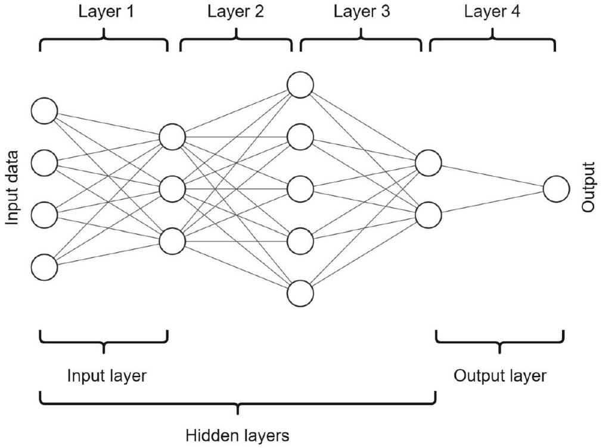

🤖 AI 生圖可用：重繪此示意圖的提示詞（結構化）
# kp7 示意圖 prompt — MLP 結構與神經元內部 (badge 2.7.1–2.7.2) ## WHAT 左右兩區。左側畫一個 4 層全連接前饋網路：輸入層 3 節點 → 隱藏層1 有 4 節點 → 隱藏層2 有 3 節點 → 輸出層 2 節點，相鄰層之間畫滿連接線（dense），每層下方標節點數，並註明「每神經元 = 一個 Perceptron」。右側放大一個神經元的內部剖面：左邊幾個輸入節點 z_ℓ，各以帶權 w_iℓ 的線匯入中間的加總節點 a_i，接著經過激活 σ_i，輸出 z_i；並標示式 (17) a_i = Σ_ℓ w_iℓ z_ℓ 與式 (18) z_i = σ(a_i)。 ## WHY MLP 的本質是「每層層層加總 + 非線性激活，逐層提煉特徵」。左圖建立「多層全連接」的巨觀結構，右圖把任何一個神經元拆開，讓讀者看到它就是一個小 Perceptron：權重加總 a_i 然後過激活 σ_i 得 z_i。因果鏈「輸入→加總→非線性→輸出」必須一眼看出。 ## MUST - 左側 4 層、節點數 3-4-3-2，層間全連接（dense），層標籤與節點數清楚。 - 標明「每神經元 = 一個 Perceptron」。 - 右側神經元剖面須包含：輸入 z_ℓ（≥3 個）、各帶權 w_iℓ、加總節點 a_i、激活符號 σ_i、輸出 z_i。 - 式 (17) a_i = Σ_ℓ w_iℓ z_ℓ 與式 (18) z_i = σ(a_i) 都要標出。 - 註明因果：層層加總+非線性 → 逐層提煉特徵。 - teal 主題配色。 ## AVOID - 不要把層間連線省略成局部連接（要能看出 dense 全連接）。 - 不要漏掉激活符號 σ_i 或把 a_i 與 z_i 畫成同一個節點。 - 不要把 (17)(18) 兩式寫錯或寫反。 - 不要畫成遞迴/環路——MLP 是前饋結構。 ## STYLE - viewBox 720×360，SVG 內嵌樣式，無外部依賴。 - teal 主題：主色 #0d9488/#0f766e/#134e4a，輸入節點 #5eead4，隱/輸出節點 #0d9488，連線淡 teal #99f6e4。 - 公式用等寬字型，中文標籤無襯線；約 60–90 行。 - 左右對照：左巨觀結構、右微觀內部，一眼建立「多層 = 大量小 Perceptron」。
MLP 的「前饋」（feedforward）指的是？
輸入層在文獻的稱呼上常被視為？
某顆神經元的激活前加總 a_i 是怎麼算的？
神經元的最終輸出 z_i 由哪個式子定義？
為何需要非線性激活函數：線性疊越多還是線性
▼這一節要回答一個「看似簡單、其實關鍵」的問題：為什麼神經網路一定要有非線性的激活函數？直接給你結論——如果所有激活都是線性的，那不管疊幾層，整座網路最終都坍縮成一次線性投影，等於只是一個更胖的線性模型，完全失去「深」的意義。
一層的長相：線性投影 + 激活
回顧上一節，每一層的運算都是「先把輸入做線性投影，再套上激活函數」。把三層串起來，整座網路的輸出可以寫成（注意每個 \(\sigma\) 包住前一層的結果）：
- \(\boldsymbol{y}=\sigma_3\left(\boldsymbol{W}_3^{\top}\,\sigma_2\left(\boldsymbol{W}_2^{\top}\,\sigma_1\left(\boldsymbol{W}_1^{\top}\boldsymbol{x}\right)\right)\right)\) (19)
- 這裡 \(\boldsymbol{W}_i^{\top}\boldsymbol{x}\) 就是把輸入 \(\boldsymbol{x}\) 投影到 \(\boldsymbol{W}_i\) 的「行空間」，\(\sigma_i\) 是第 \(i\) 層的激活函數。
致命推導：線性激活 ⇒ 網路坍縮
假設每一層的激活函數都是線性的。因為「線性函數 + 線性投影」仍然是線性算子，我們可以把兩者合併成一個新的線性投影 \(\boldsymbol{V}_i:=\sigma_i\boldsymbol{W}_i^{\top}\)。於是上面的式子一步一步變成（推導表）：
- \(\sigma_i\) 線性、\(\boldsymbol{W}_i^{\top}\) 線性 ⇒ 令 \(\boldsymbol{V}_i:=\sigma_i\boldsymbol{W}_i^{\top}\) 仍是線性投影
- 整座網路就變成 \(\boldsymbol{y}=\boldsymbol{V}_3^{\top}\boldsymbol{V}_2^{\top}\boldsymbol{V}_1^{\top}\boldsymbol{x}=\boldsymbol{V}^{\top}\boldsymbol{x}\) (20)
- 其中 \(\boldsymbol{V}:=\boldsymbol{V}_1\boldsymbol{V}_2\boldsymbol{V}_3\) (21)，三個線性矩陣相乘結果仍是一個線性矩陣
- 結論：\(\boldsymbol{y}\) 只是輸入 \(\boldsymbol{x}\) 的一次線性投影
Fig. 10 的直覺
原文 Fig. 10 畫的就是這個概念：把每一層的權重看成夾在激活函數之間的「線性投影矩陣」。如果中間那些激活都是線性的，這些矩陣就會像疊積木一樣直接乘在一起，變成一個大矩陣——你疊了 100 層，數學上卻跟 1 層一樣。
結論：非線性 = 表達能力
- 網路能處理非線性資料模式（如 XOR、彎曲的決策邊界），靠的正是非線性激活函數。
- 要讓「深」有意義，就必須在每一層的線性投影之間插入非線性——這也解釋了為什麼下一節要花一整節介紹各種非線性激活函數。
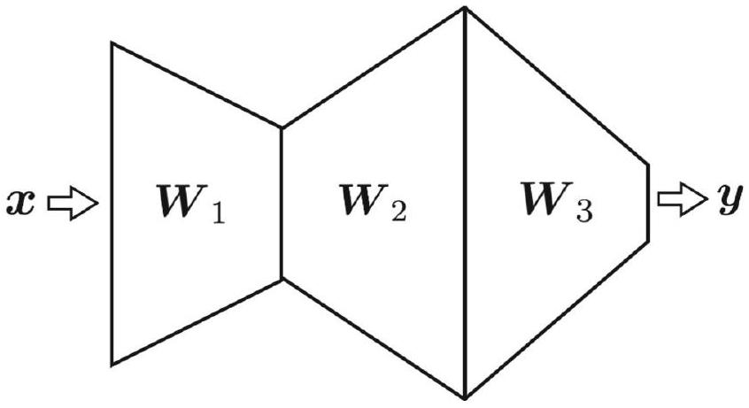
🤖 AI 生圖可用：重繪此示意圖的提示詞（結構化）
# kp8 示意圖 prompt — 為何需要非線性 (badge 2.7.3) ## WHAT 左右強對比的示意圖，中間以垂直虛線作「命運分岔」。左側「全線性」：三個線性投影 V₁、V₂、V₃ 由上而下疊加，箭頭匯聚到單一矩陣 V = V₁·V₂·V₃，再收束成一條直線輸出，配上大紅叉「✗ 坍縮、無表達力」。右側「含非線性」：線性層 L₁、L₂、L₃ 之間各插入彎曲的激活波浪符號 σ，三層疊加後輸出為彎曲的決策邊界，配上綠勾「✓ 保留表達力」。 ## WHY 要回答「為什麼需要非線性激活」：因為線性投影疊加會坍縮——V = V₁·V₂·V₃ 其實仍是一個單一線性矩陣，再多層也無法表達 XOR 這類彎曲決策。只有每層之間插入非線性，網路才具有真正的表達力。用「坍縮（✗）vs 表達力（✓）」的命運分岔，直觀對比有/無非線性的結果差異。 ## MUST - 左右兩欄標題清楚：左「全線性 · 坍縮」、右「含非線性 · 表達力」，中央有分岔指示（虛線或文字）。 - 左側三個線性投影層箭頭必須匯聚成「單一矩陣 V」並標 V = V₁·V₂·V₃，輸出為直線，配大紅叉 ✗。 - 右側線性層之間必須有彎曲激活波浪 σ，三層疊加後輸出為彎曲決策邊界，配大綠勾 ✓。 - 坍縮與表達力的對比結論須以文字點出。 - teal 主題配色，紅 ✗ / 綠 ✓ 對比鮮明。 ## AVOID - 不要把左側畫成非線性輸出（左邊必須是直線、坍縮、✗）。 - 不要把右側畫成直線輸出（右邊必須是彎曲邊界、✓）。 - 不要漏掉 V = V₁·V₂·V₃ 這個「全線性坍縮」的關鍵式。 - 不要省去中間的分岔對比符號（✗/✓）或使其語意混淆。 ## STYLE - viewBox 720×360，SVG 內嵌樣式，無外部依賴。 - teal 主題：主色 #0d9488/#0f766e/#134e4a，色塊 #ccfbf1，紅 #ef4444、綠 #16a34a。 - 中間垂直虛線作為分岔中軸；約 60–90 行。 - 一圖講完「非線性有無 → 坍縮或表達力」的因果分岔。
如果網路中所有激活函數都是線性的，整座網路會變成？
在三層全線性網路中，令 \(\boldsymbol{V}_i:=\sigma_i\boldsymbol{W}_i^{\top}\)，最終 \(\boldsymbol{V}\) 等於？
網路之所以能處理非線性資料模式（如 XOR），其表達能力來自？
\(\boldsymbol{W}_i^{\top}\boldsymbol{x}\) 的幾何意義是？
13 種激活函數一覽：從線性到 maxout
▼既然非線性是表達能力的來源，接下來這節把最常用的 13 種激活函數一次看過。每一種你都掌握三件事：公式長什麼樣、輸出的值域在哪、導數是多少（原文 Fig. 11 有完整的圖對照）。先記住一個總原則：輸出值域決定「能不能當機率」「會不會讓梯度消失」。
基礎款：線性、二元、sign、softmax（當機率用）
- Linear / identity (22)：\(\sigma(a)=a\)，值域 \((-\infty,\infty)\)，\(\sigma'(a)=1\)。等於沒做轉換，幾乎不用在隱藏層，但回歸任務的輸出層可以。注意：若拿它當激活，網路就坍縮回線性。
- Binary Step (23)：\(\sigma(a)=0\)（\(a\lt 0\)）／\(1\)（\(a\ge0\)），值域 \([0,1]\)。在 \(a=0\) 處不可導，故現代深度學習少用。
- Sign / signum (24)：輸出 \(-1\) 或 \(1\)，值域 \([-1,1]\)。保留輸入的正負號，偶爾用於量化網路。
- Softmax (33)(34)：\(\sigma_i(\boldsymbol{a})=e^{a_i}/\sum_{i=1}^{m}e^{a_i}\)，值域 \((0,1)\) 且跨類別求和為 1。它是 sigmoid 對多分類的推廣，作用在整層（cross-layer），不是逐點；導數含 Kronecker delta：\(\sigma_i(\boldsymbol{a})(\delta_{ij}-\sigma_j(\boldsymbol{a}))\)。
S 形（有界）款：sigmoid、tanh、Gaussian
- Logistic / sigmoid (25)：\(\sigma(a)=\frac{1}{1+e^{-a}}\in[0,1]\)，\(\sigma'(a)=\sigma(a)(1-\sigma(a))\)。常當二元分類輸出層的機率；值域可解釋成機率。
- tanh (26)：\(\sigma(a)=\frac{e^a-e^{-a}}{e^a+e^{-a}}\in[-1,1]\)，\(\sigma'(a)=1-\sigma(a)^2\)。跟 sigmoid 很像但輸出零中心，實務上收斂常更快。
- Gaussian / RBF (27)：\(\sigma(a)=e^{-a^2}\in(0,1]\)，\(\sigma'(a)=-2ae^{-a^2}\)。鐘形，用於 RBF 網路，深度學習少用。
里程碑款：ReLU 家族（解決梯度消失＋稀疏）
- Softplus (28)：\(\sigma(a)=\ln(1+e^a)\in[0,\infty)\)，\(\sigma'(a)=\frac{1}{1+e^{-a}}\)。ReLU 的光滑近似，輸出恆正、理論性質好，但收斂常較慢。
- ReLU (29)：\(\sigma(a)=\max(0,a)\in[0,\infty)\)，\(a\gt 0\) 時 \(\sigma'(a)=1\)、\(a\lt 0\) 時為 0。這是深度學習的里程碑：正值段導數恒為 1，避免梯度消失，且把負激發歸零帶來稀疏性、有助泛化。
- dying ReLU 與修補：ReLU 在負區間導數為 0，若神經元老是收到負輸入，權重更新為 0、就「死掉」了。因此有——Leaky ReLU (31)：負區間給小斜率 \(0.01\)，\(\sigma(a)=0.01a\)（\(a\lt 0\)）；PReLU (32)：把負斜率 \(\alpha\) 變成可學習參數，是 Leaky 的一般化。
- ELU (30)：負區間用 \(\alpha(e^a-1)\) 平滑過渡，輸出 \((-\alpha,\infty)\)，比 ReLU 平滑。
跨層款：maxout
- Maxout (35)：\(\sigma_i(\boldsymbol{a})=\max_j(\sigma_j)\)，回傳多個輸入中的最大值，值域 \((-\infty,\infty)\)。具通用近似性質，對 dropout 正規化較穩健；導數在取最大處為 1、其餘為 0。
速查表
| 名稱 | 公式 | 值域 | 導數 |
|---|---|---|---|
| Linear (22) | \(a\) | \((-\infty,\infty)\) | \(1\) |
| Sigmoid (25) | \(\frac{1}{1+e^{-a}}\) | \([0,1]\) | \(\sigma(1-\sigma)\) |
| tanh (26) | \(\frac{e^a-e^{-a}}{e^a+e^{-a}}\) | \([-1,1]\) | \(1-\sigma^2\) |
| ReLU (29) | \(\max(0,a)\) | \([0,\infty)\) | 正:1／負:0 |
| Softmax (33) | \(\frac{e^{a_i}}{\sum e^{a_j}}\) | \((0,1)\) 逐類 | \(\sigma_i(\delta_{ij}-\sigma_j)\) |
重點回顧：ReLU 靠「正值段導數恒為 1」緩解梯度消失、靠「歸零負值」帶來稀疏；dying ReLU 由 Leaky / PReLU 修補；softmax 是唯一的跨層激活，輸出可當多類機率分布。
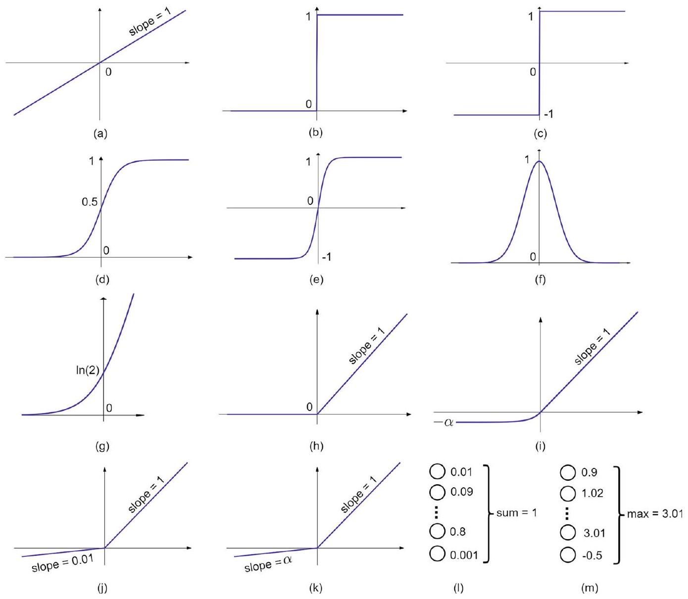
🤖 AI 生圖可用：重繪此示意圖的提示詞（結構化）
WHAT（骨架）: 一張 13 種激活函數的 3×5 網格速查圖，每個小格畫出該函數的曲線草圖（直線、階躍、S形、鐘形、折線等），下方標名稱與值域。網格依「基礎款 → S形有界款 → ReLU 家族 → 跨層款」分列；ReLU 格用琥珀色加冕標為「里程碑」，Leaky/PReLU 在負半軸畫小斜率與 ReLU 的零斜率對比；softmax 以分組長條＋跨層箭頭表示；最後一行合併兩格畫出「ReLU 家族演進鏈」：S形→ReLU(里程碑)→dying→Leaky/PReLU 修補。 WHY（因果或反直覺）: 因果鏈是「輸出值域決定能不能當機率、會不會梯度消失 → 選激活要看值域與導數」。反直覺點：ReLU 靠「正值段導數恒為 1」緩解梯度消失、靠「負值歸零」帶來稀疏性，成為深度學習里程碑；但它負區間導數為 0 會讓神經元「死掉」（dying ReLU），故用 Leaky(固定小斜率)/PReLU(可學斜率)修補；softmax 是唯一「跨層」作用而非逐點的激活。 MUST show（必備要素）: ① 3×5 網格（最後一行兩格留空或合併）；② 每格曲線草圖＋名稱＋值域；③ ReLU 格琥珀高亮並加冕「★里程碑」；④ Leaky/PReLU 負半軸小斜率對比（標 0.01 / 斜率α可學）；⑤ softmax 分組長條＋「跨層」箭頭；⑥ 值域標註（如 [0,1]、[−1,1]、(−∞,∞)）；⑦ 底部合併格畫出 ReLU 家族演進鏈並標「亮點」。 AVOID（禁止）: 不要畫真實座標軸網格或數學公式/LaTeX 反斜線；不要讓 13 個格子文字互相溢出或字體超過格子高度；不要用非 teal 主色（僅 ReLU 亮點允許琥珀）；不要漏掉任何一種激活（Linear/Binary/Sign/Sigmoid/tanh/Gaussian/Softplus/ReLU/ELU/Leaky/PReLU/Softmax/Maxout）。 STYLE: flat vector, scientific, white background, teal 主色（深 teal #134e4a 文字、#0f766e 主線、#14b8a6/#5eead4 輔線、#f0fdfa 底、#99f6e4 邊），僅 ReLU 高亮用琥珀 #f59e0b/#fef3c7，圓角小格、無陰影、無漸層、字體清晰（名稱 11px、值域 9px）。
為何 ReLU 被視為深度學習的里程碑？
哪一種激活函數是「跨層」而非逐點作用，輸出可視為多類機率分布？
「dying ReLU」問題指的是？
PReLU 與 Leaky ReLU 的主要差別是？
常見損失函數：MSE／MAE／Huber／KL／Hinge／交叉熵
▼損失函數（loss / cost function）決定網路「該往哪個方向調參數」。先統一符號：\(\theta\) 是網路權重、\(\boldsymbol{x}_i\) 是輸入、\(\mathbf{f}_o(\boldsymbol{x}_i)\) 是網路對該輸入的輸出、\(y_i\) 是目標標籤、\(b\) 是批次大小（一個 batch 的樣本數）、\(c\) 是類別數。下面按「回歸」和「分類」兩大類看六種。
回歸常用：MSE、MAE、Huber
- MSE（均方誤差） (36)：minimize \(\sum_{i=1}^{b}(\mathbf{f}_o(\boldsymbol{x}_i)-y_i)^2\)。優點：平方之後到處可導，適合梯度下降。缺點：平方把離群值（outlier）放大，對離群值敏感。
- MAE（平均絕對誤差） (37)：minimize \(\sum_{i=1}^{b}\lvert\mathbf{f}_o(\boldsymbol{x}_i)-y_i\rvert\)，又稱 Manhattan 距離。對離群值較穩健，且能鼓勵學到的表示變稀疏；缺點是在零點處不可導（實務上靠次梯度處理）。
- Huber (38)：折衷兩者。當 \(\lvert\mathbf{f}_o-y\rvert\le\delta\) 用 \(0.5(\mathbf{f}_o-y)^2\)（二次區，像 MSE）；否則用 \(\delta(\lvert\mathbf{f}_o-y\rvert-0.5\delta)\)（線性區，像 MAE）。\(\delta\gt 0\) 是可調的超參數，決定二次與線性區的切換門檻。
分類常用：KL、Hinge、Cross-Entropy
- KL divergence (39)：minimize \(\sum_{i=1}^{b}\sum_{l=1}^{c}(y_i)_l\log\frac{(y_i)_l}{\mathbf{f}(\boldsymbol{x}_i)_l}\)。衡量預測分布 \(\mathbf{f}(\boldsymbol{x})\) 與目標分布 \(y\) 的「不相似度」。當 \(y\) 是 one-hot 時會退化成交叉熵；當 \(y\) 是軟標籤（soft target）時特別有用，例如知識蒸餾。
- Hinge (40)：minimize \(\sum_{i=1}^{b}[m-y_i\mathbf{f}_o(\boldsymbol{x}_i)]_{+}\)，其中 \([\cdot]_{+}=\max(\cdot,0)\)（跟 ReLU 同型）、\(m\gt 0\) 是 margin 超參數、\(y_i\in\{-1,1\}\)。它不只懲罰分錯，也懲罰「分對了但離邊界太近」的樣本；當 \(\lvert\mathbf{f}_o\rvert\ge m\) 時損失為 0。也是 contrastive / triplet loss 的基礎。
- Cross-Entropy（交叉熵） (41)：minimize \(-\sum_{i=1}^{b}\sum_{l=1}^{c}(\boldsymbol{y}_i)_l\log\mathbf{f}_o(\boldsymbol{x}_i)_l\)。分類最常用。前置條件：輸出層必須接 softmax（\(c\gt 2\) 類）或 sigmoid（二元），確保預測落在 [0,1] 且求和為 1。最小化它會讓網路把高機率分給正確類別，並在倒數第二層（penultimate layer）學出判別性特徵，有利下游檢索／聚類。
六種損失速查
| 損失 | 適用 | 優點 | 注意 |
|---|---|---|---|
| MSE (36) | 回歸 | 處處可導 | 對離群值敏感 |
| MAE (37) | 回歸 | 對離群值穩健、鼓勵稀疏 | 零點不可導 |
| Huber (38) | 回歸 | MSE/MAE 折衷 | 需調 \(\delta\) |
| KL (39) | 分布對齊 | 支援軟標籤／蒸餾 | one-hot 時退化成 CE |
| Hinge (40) | 二分類 | 有 margin | 需 \(y_i\in\{-1,1\}\) |
| CE (41) | 分類 | 輸出層需 softmax/sigmoid | 倒數第二層學判別特徵 |
挑選邏輯：回歸先試 MSE，怕離群值就換 MAE 或 Huber；分類幾乎一律用交叉熵（輸出層配 softmax/sigmoid），需要軟標籤場景用 KL，需要 margin 的二分類用 Hinge。
🤖 AI 生圖可用：重繪此示意圖的提示詞（結構化）
WHAT（骨架）: 一張損失函數示意圖，分上、下兩塊。上半：以殘差 e=(f_o−y) 為橫軸、loss 為縱軸，疊畫 4 條曲線對比——MSE（拋物線、陡峭）、MAE（V形）、Huber（δ 內二次外線性的折衷）、Hinge（e≥margin 平坦、e
MSE 的主要缺點是？
Huber 損失中的超參數 \(\delta\) 的作用是？
哪一種損失函數在目標 \(y\) 為軟標籤（soft target）時特別有用，例如知識蒸餾？
使用 Cross-Entropy 損失時，輸出層必須具備什麼條件？
ADALINE 與 MADALINE：用連續誤差取代二元輸出
▼Perceptron 的兩個老毛病——依賴二元激活函數、泛化不佳——催生了另一個更穩定、解析上更好處理的學習法。1960 年 Bernard Widrow 與 Ted Hoff 提出了 ADALINE（Adaptive Linear Neuron，自適應線性神經元）。它的核心突破很簡單：用「加權和」當預測誤差的基準，而不是先用硬閾值切成 0/1 再比對。因為訓練時用的是連續數值輸出，權重更新更平滑，通常也帶來更好的泛化。
ADALINE 怎麼算誤差：LMS 二次損失
回想 Perceptron 是把輸入加權、過閾值、輸出二元的 0/1 或 ±1。ADALINE 不這樣——它直接把真實標籤 \(y_i\) 跟「尚未套激活的加權和」\(\sum_j w_j x_{ij}+w_0\) 相比（Fig. 12）。訓練目標是最小化最小均方（LMS）誤差，這是一個二次損失，懲罰「預測與標籤」差值的平方：
- \(e=\frac{1}{2}\sum_{i=1}^{b}\left(y_i-\left(\sum_{j=1}^{d} w_j x_{ij}+w_0\right)\right)^2\) (42)
- 這裡 \(b\) 是批次大小、\(y_i\) 是真實標籤、\(w_0\) 是偏置項。
- 這套學習法叫 LMS 演算法／Widrow-Hoff 法則，是對線性模型做梯度下降的早期形式。
梯度與更新
把 \(e\) 對每個權重與偏置求偏導，得到梯度（負號來自內層的 \(y_i-(\dots)\)）：
- \(\frac{\partial e}{\partial w_j}=-\sum_{i=1}^{b}\left(y_i-\left(\sum_{j=1}^{d} w_j x_{ij}+w_0\right)\right)x_{ij}\)，\(\forall j\in\{1,\dots,d\}\) (43)
- \(\frac{\partial e}{\partial w_0}=-\sum_{i=1}^{b}\left(y_i-\left(\sum_{j=1}^{d} w_j x_{ij}+w_0\right)\right)\)
接著用梯度下降更新權重（\(\eta>0\) 是學習率）：
- \(w_j:=w_j-\eta\frac{\partial e}{\partial w_j}\)，\(\forall j\in\{1,\dots,d\}\) (44)
- \(w_0:=w_0-\eta\frac{\partial e}{\partial w_0}\)
MADALINE：把多顆 ADALINE 堆起來
為了應付更複雜的任務，Widrow 等人把多顆 ADALINE 單元堆疊成分層架構，稱為 MADALINE（Many ADALINEs，很多 ADALINE）（Fig. 13）。它的訓練規則一路演進：
- 1962 年 MADALINE Rule I（MRI）：最早提出，但只能更新「輸入層到隱藏層」之間的權重。
- 1988 年 MADALINE Rule II（MRII）：突破限制，能同時更新輸入→隱藏與隱藏→輸出兩段連接。
- 1990 年 MADALINE Rule III（MRIII）：進一步改良，支援更深入的多層訓練。
這些努力代表最早一批「建立並訓練深層神經架構」的嘗試，甚至發生在反向傳播被廣為採用之前。
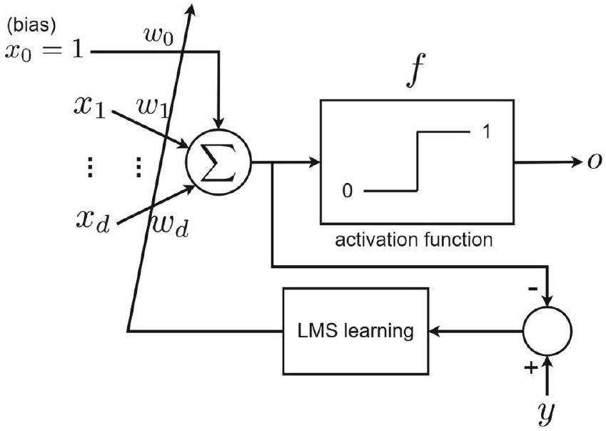
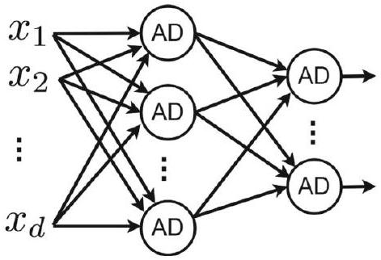
🤖 AI 生圖可用：重繪此示意圖的提示詞（結構化）
WHAT（骨架）: 一張 ADALINE vs MADALINE 示意圖，分上、下兩半。上半左右對比：左「Perceptron（離散）」垂直流程＝加權和→硬閾值→二元輸出→離散誤差±1→硬更新；右「ADALINE（連續，Widrow & Hoff 1960）」流程＝加權和直接比 y−Σw·x→連續誤差 e→LMS 二次損失 ½Σ(…)²→平滑梯度 ∇e→梯度下降 w←w−η∇e。下半 MADALINE 時間軸：1960 ADALINE 起點 → 1962 MRI → 1988 MRII → 1990 MRIII，每個網路畫出多層 ADALINE 堆疊（輸入→隱藏→輸出節點），連接線由細到粗、由部分虛線到全實線，代表可訓練範圍逐步擴大。 WHY（因果或反直覺）: 因果鏈是「用『尚未套激活的加權和』直接對標籤比誤差 → 誤差是連續數值而非二元 ±1 → 損失是二次（LMS）處處可導 → 得到平滑梯度 → 權重更新更穩、泛化更好」。反直覺點：Perceptron 先硬切成 0/1 再比對，離散誤差讓更新「要嘛全推要嘛全不推」，泛化差；ADALINE 把閾值留到推理期、訓練期用連續加權和，因此能梯度下降。MADALINE 的 MRI→MRII→MRIII 是早期「建立並訓練深層架構」的嘗試，比反向傳播更早。 MUST show（必備要素）: ① 上半左右對比流程：左 Perceptron（硬閾值→二元→離散誤差→硬更新）、右 ADALINE（加權和直接比→連續誤差→平滑梯度）；② LMS 二次損失 ½Σ(y−Σw·x)² 出現；③ 梯度下降更新式 w←w−η∇e 出現；④ 下半 MADALINE 時間軸 1960→1962 MRI→1988 MRII→1990 MRIII；⑤ 多層 ADALINE 堆疊示意（輸入→隱藏→輸出節點）；⑥ 連接線加粗表示可訓練範圍擴大（MRI 隱藏→輸出虛線＝不可訓、MRII 全實線加粗、MRIII 更深層更粗）；⑦ 底部橫向「可訓練範圍擴大」箭頭。 AVOID（禁止）: 不要把 Perceptron 畫得與 ADALINE 一樣生動（左 Perceptron 需用灰 #94a3b8/#e2e8f0/#f8fafc 淡化，對比離散與硬更新）；不要出現 LaTeX 反斜線或過多公式；不要讓左右流程與下方時間軸互相溢出或遮字；不要漏掉 LMS 損失與梯度更新式；不要用非 teal 主色；不要在 720×360 之外裁切。 STYLE: flat vector, scientific, white background, teal 主色（#065f56 文字與深線、#0d9488 主線與深節點、#ccfbf1/#f0fdfa 底、#99f6e4 中間層節點），左 Perceptron 用灰 #94a3b8/#e2e8f0 淡化以對比「離散/硬」，圓角方框、圓形節點、無陰影、無漸層、流程箭頭由上而下、時間軸箭頭由左而右，連接線隨年代加粗。
ADALINE 在訓練時用來計算預測誤差的基準是什麼？
ADALINE 的訓練目標是透過最小化哪一個損失來學習？
權重 \(w_j\) 的梯度下降更新式是？
MADALINE 訓練規則的演進，下列何者正確？
Logistic Regression：作為單神經元網路的機率分類器
▼Logistic regression（邏輯回歸）並不屬於神經網路的歷史脈絡，但它長得極像「單神經元＋sigmoid 激活」的網路，而且能教我們「如何用機率解讀輸出、如何從最大似然推導損失」。我們把它放進來，是因為它在數學上把非線性激活與機率框架綁在一起——正是理解現代神經網路訓練的鑰匙。
從 Bayes 公式出發，直接建模後驗
設輸入 \(\boldsymbol{x}\in\mathbb{R}^d\)、二元標籤 \(y\in\{0,1\}\)。Bayes 公式給出：
- \(\mathbb{P}(y\mid\boldsymbol{x})=\frac{\mathbb{P}(\boldsymbol{x}\mid y)\mathbb{P}(y)}{\mathbb{P}(\boldsymbol{x})}\) (45)
- \(\mathbb{P}(y\mid\boldsymbol{x})\) 叫後驗，\(\mathbb{P}(\boldsymbol{x}\mid y)\) 叫似然，\(\mathbb{P}(\boldsymbol{x}),\mathbb{P}(y)\) 叫先驗。
- 與 LDA 的關鍵差別：Linear Discriminant Analysis（線性判別分析）從似然與先驗下手去推後驗；Logistic regression 則直接建模後驗 \(\mathbb{P}(y\mid\boldsymbol{x})\)，跳過中間的生成模型。
用 sigmoid 把線性回歸壓到 [0,1]
歷史小記：logistic 函數 1845 年由 Verhulst 提出用來建模人口成長，1967 年 Walker & Duncan 加以推廣。邏輯回歸把分類當成「回歸出屬於某一類的機率」。做法是：先寫一個線性回歸 \(\boldsymbol{\beta}^{\top}\boldsymbol{x}+\boldsymbol{\beta}_0\)。為了省去偏置項，它假設 \(\boldsymbol{x}=\left[1,x_1,\dots,x_d\right]^{\top}\)（多放一個 1 吸收 bias），於是線性部分變成 \(\boldsymbol{\beta}^{\top}\boldsymbol{x}\)，其中 \(\boldsymbol{\beta}\in\mathbb{R}^{d+1}\)。但線性回歸沒有上下界，不能當機率，所以用 logistic（sigmoid）函數把它壓到 [0,1]：
- \(\mathbb{P}(y=1\mid X=x)=\frac{e^{\boldsymbol{\beta}^{\top}\boldsymbol{x}}}{1+e^{\boldsymbol{\beta}^{\top}\boldsymbol{x}}}\) (46)
- \(\mathbb{P}(y=0\mid X=x)=1-\mathbb{P}(y=1\mid X=x)=\frac{1}{1+e^{\boldsymbol{\beta}^{\top}\boldsymbol{x}}}\) (47)
如 Fig. 15 所示，logistic regression 可視為只有一顆神經元、激活函數是 sigmoid 的網路。
最大似然：從後驗到對數後驗
給定 \(n\) 筆 i.i.d. 資料，整份資料的後驗（48)(49) 代入 (46)(47) 得 (50)。取對數後得到對數後驗：
- \(\ell(\boldsymbol{\beta})=\sum_{i=1}^{n}\left(y_i\boldsymbol{\beta}^{\top}\boldsymbol{x}_i-\log\left(1+e^{\boldsymbol{\beta}^{\top}\boldsymbol{x}_i}\right)\right)\)
- 一次導數（梯度）\(\frac{\partial\ell}{\partial\boldsymbol{\beta}}=\sum_{i=1}^{n}\left(y_i-\frac{e^{\boldsymbol{\beta}^{\top}\boldsymbol{x}_i}}{1+e^{\boldsymbol{\beta}^{\top}\boldsymbol{x}_i}}\right)\boldsymbol{x}_i\) (51)
- 二次導數（Hessian）\(\frac{\partial^2\ell}{\partial\boldsymbol{\beta}\partial\boldsymbol{\beta}^{\top}}=-\sum_{i=1}^{n}\left(\mathbb{P}(\boldsymbol{x}_i\mid\boldsymbol{\beta})(1-\mathbb{P}(\boldsymbol{x}_i\mid\boldsymbol{\beta}))\right)\boldsymbol{x}_i\boldsymbol{x}_i^{\top}\) (54)
矩陣形式與 Newton 更新
把東西寫成矩陣會更乾淨。定義 \(\boldsymbol{X}\in\mathbb{R}^{(d+1)\times n}\)（第一列全為 1）、\(\boldsymbol{W}=\operatorname{diag}(P(1-P))\)、\(\boldsymbol{y}\) 為標籤向量、\(\boldsymbol{p}\) 為目前預測的機率向量，則：
- \(\frac{\partial\ell}{\partial\boldsymbol{\beta}}=\boldsymbol{X}(\boldsymbol{y}-\boldsymbol{p})\) (55)
- \(\frac{\partial^2\ell}{\partial\boldsymbol{\beta}\partial\boldsymbol{\beta}^{\top}}=-\boldsymbol{X}\boldsymbol{W}\boldsymbol{X}^{\top}\) (56)
- Newton 法最大化對數後驗：\(\boldsymbol{\beta}^{(\tau+1)}:=\boldsymbol{\beta}^{(\tau)}-(\boldsymbol{X}\boldsymbol{W}\boldsymbol{X}^{\top})^{-1}\boldsymbol{X}(\boldsymbol{y}-\boldsymbol{p})\) (57)
測試階段
測試時，對輸入 \(\boldsymbol{x}\) 算出的機率與閾值 0.5 比較來決定類別：
- \(y=1\) 若 \(\frac{e^{\boldsymbol{\beta}^{\top}\boldsymbol{x}}}{1+e^{\boldsymbol{\beta}^{\top}\boldsymbol{x}}}\ge 0.5\)，否則 \(y=0\) (58)
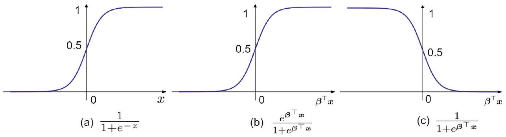
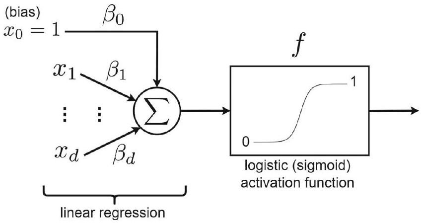
🤖 AI 生圖可用：重繪此示意圖的提示詞（結構化）
WHAT 一張 720×360 的教學示意圖，主題為「Logistic Regression 作為單神經元網路的機率分類器」。四區構圖：(1) 左上 Bayes 公式分岔，對比 LDA（用似然×先驗推後驗）與 Logistic（直接建模後驗）；(2) 中上 線性 βᵀx（無界軸）→ sigmoid 漏斗 → 壓到 [0,1] 的垂直機率條（標 0/1 與 0.5 虛線閾值）；(3) 右上 Newton 迭代螺旋曲線收斂到 β*，附更新式 βᵗ⁺¹:=β−(XWXᵀ)⁻¹X(y−p)；(4) 底部單神經元流程：輸入 x₁,x₂,x_d → Σ → sigmoid → 機率 → ≥0.5 閾值 → ŷ。 WHY 視覺化三條核心因果：(a) Bayes 後驗 vs 似然的建模路線差異；(b) sigmoid 為何能「壓」無界線性到 (0,1) 並可當機率；(c) 因為對數後驗為凸，Newton 用梯度+Hessian 取得二階快速收斂。底部單神經元圖把 logistic 回歸定位成一個「線性加權→sigmoid→機率」的單層網路，承接全章神經元主題。 MUST - 保留「LDA(似然×先驗) vs Logistic(直接後驗)」的分岔對比，Logistic 用深色強調。 - sigmoid 漏斗要呈現「寬→窄」的壓縮感，輸出端是垂直機率條，0.5 閾值必須用虛線標出。 - Newton 螺旋曲線必須收斂到一個標為 β* 的終點，更新公式逐字呈現。 - 底部神經元鏈完整（輸入→Σ→sigmoid→機率→閾值→ŷ），每個方塊有標籤。 - 圖底保留一句因果總結「線性無界→sigmoid 有界→機率→Newton 二階收斂」。 - 數學記號用斜體、機率/向量用粗體或清晰小字，中文為主。 AVOID - 不要畫成一般梯度下降的直線下降，要呈現二階 Newton 的螺旋收斂。 - 不要把 LDA 與 Logistic 畫成上下層級，要畫成同一 Bayes 根節點向下的「兩條分支」對比。 - 不要省略 0.5 閾值；不要讓 sigmoid 曲線越出機率條的 [0,1] 範圍感。 - 避免過多裝飾性漸層或陰影，保持線框簡潔。 STYLE - 主色 teal（深 #065f56、主 #0d9488、中 #14b8a6、淺底 #ccfbf1/#f0fdfa），中性灰 #64748b 用於座標與輔助線。 - 扁平化線框插圖，圓角方塊、細箭頭，無 3D 透視。 - 中文無襯線字型（如 PingFang TC / 微軟正黑體），數學斜體襯線（Cambria Math）。 - 版面上下留白、四區有清楚小標題分區，整體清爽、教育感強。
與 LDA 相比，Logistic Regression 建模的是？
logistic 函數最初的用途是？
矩陣形式下，Newton 更新式 \(\boldsymbol{\beta}^{(\tau+1)}\) 為？
測試階段如何決定某輸入 \(\boldsymbol{x}\) 的類別？
RBF 網路與 Self-Organizing Map：固定基函數與無監督拓撲
▼這一節看兩個「概念重要、但不在深度學習主線」的模型：RBF 網路（監督，用固定基函數）與 Self-Organizing Map（無監督，自組織聚類）。它們分別展示了「用固定的核函數當特徵轉換」與「靠自組織在無標籤下揭露資料結構」這兩種不同的思路。
RBF 網路：兩層結構，第一層固定基函數
Radial Basis Function（徑向基函數）網路由 Broomhead & Lowe 於 1988 年提出。如 Fig. 16，它是兩層架構：
- 第一層：把輸入 \(\boldsymbol{x}\in\mathbb{R}^d\) 接到 \(m\) 個固定的基函數 \(\phi_i(\boldsymbol{x}),\,i=1,\dots,m\)。常用的基函數如 Gaussian 或 logistic（sigmoid）：
- Gaussian：\(\phi_i(\boldsymbol{x})=e^{-\frac{\lVert\boldsymbol{x}-\boldsymbol{\mu}_i\rVert_2^2}{2\sigma_i^2}}\) (59)
- Logistic：\(\phi_i(\boldsymbol{x})=\frac{1}{1+e^{-\frac{\lVert\boldsymbol{x}-\boldsymbol{\mu}_i\rVert_2^2}{2\sigma_i^2}}}\) (60)
- 其中 \(\boldsymbol{\mu}_i,\sigma_i^2\) 是均值與變異數。第一層不訓練：先對訓練資料跑 K-means 取 \(m\) 個群心當均值 \(\{\boldsymbol{\mu}_i\}\)，再由群的變異數決定 \(\{\sigma_i\}\)。
- 第二層：可訓練權重 \(\boldsymbol{W}\in\mathbb{R}^{m\times k}\)，把基函數輸出映射到最終 \(k\) 個預測。
輸出是基函數的加權平均（additive model）：\(\widehat{y}_j=\sum_{i=1}^{m}w_{ij}\phi_i(\boldsymbol{x})\) (61)。
最小二乘求解權重
把 \(n\) 筆資料寫成矩陣，\(\widehat{\boldsymbol{Y}}=\boldsymbol{W}^{\top}\boldsymbol{\Phi}\) (62)，其中 \(\boldsymbol{\Phi}\in\mathbb{R}^{m\times n}\) 每行是某筆資料對所有基函數的值。最小化 Frobenius 範數損失：
- minimize \(\lVert\boldsymbol{Y}-\boldsymbol{W}^{\top}\boldsymbol{\Phi}\rVert_F^2\) (63)
- 展開並用 tr 的線性與循環性質，對 \(\boldsymbol{W}\) 求導置零得 \(\boldsymbol{\Phi}\boldsymbol{\Phi}^{\top}\boldsymbol{W}=\boldsymbol{\Phi}\boldsymbol{Y}^{\top}\)
- \(\boldsymbol{W}=(\boldsymbol{\Phi}\boldsymbol{\Phi}^{\top})^{-1}\boldsymbol{\Phi}\boldsymbol{Y}^{\top}\) (64)；若 \(\boldsymbol{\Phi}\boldsymbol{\Phi}^{\top}\) 奇異，改用偽逆 \(\boldsymbol{W}=(\boldsymbol{\Phi}\boldsymbol{\Phi}^{\top})^{\dagger}\boldsymbol{\Phi}\boldsymbol{Y}^{\top}\) (65)
- 輸出（訓練或測試）\(\widehat{\boldsymbol{Y}}=\boldsymbol{W}^{\top}\boldsymbol{\Phi}\) (66)
SOM（Kohonen 網路）：無監督單層聚類
Self-Organizing Map 由 Kohonen（1982）提出，用於無監督學習與聚類，不做監督預測。它是單層網路：把輸入 \(\boldsymbol{x}\in\mathbb{R}^d\) 接到 \(k\) 顆神經元，每顆代表一個簇原型。神經元按預設的 1D 或 2D 拓撲排列（Fig. 17），讓相似的輸入激發相鄰的神經元。每顆神經元 \(j\) 在其拓撲上有鄰域 \(\mathcal{N}_j^{(\tau)}\)，訓練過程中會逐漸縮小。
訓練演算法五步：
- 初始化：權重設為小隨機值；所有鄰域 \(\mathcal{N}_j^{(0)}\) 設為神經元格子的一半；學習率 \(\eta^{(0)}\in(0,1]\)。
- 選輸入與勝者：挑一筆 \(\boldsymbol{x}\)，取勝者 \(z:=\arg\min_j\sum_{i=1}^{d}\lVert x_i-w_{ij}\rVert_2\) (67)
- 鄰域更新：只更新勝者鄰域內的神經元權重 \(w_{ij}^{(\tau+1)}:=w_{ij}^{(\tau)}+\eta^{(\tau)}(x_i-w_{ij}^{(\tau)})\) 若 \(j\in\mathcal{N}_z^{(\tau)}\)，否則不變 (68)
- 衰減：降低學習率 \(\eta^{(\tau+1)}:=\eta^{(0)}(1-\tau/t)\) (69)，且鄰域對半縮 \(\mathcal{N}_j^{(\tau+1)}:=\mathcal{N}_j^{(\tau)}/2\) (70)
- 迭代：\(\tau\) 加一，回到第 2 步。
測試階段，把 \(\boldsymbol{x}\) 送入，由式 (67) 求得的勝者神經元就決定它所屬的簇。
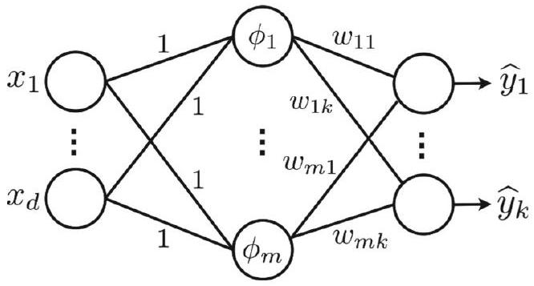
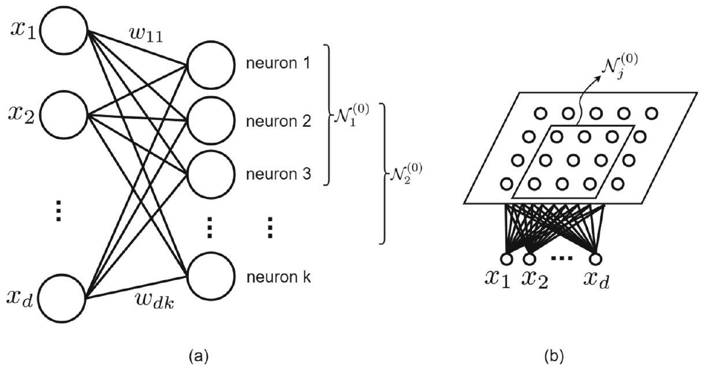
🤖 AI 生圖可用：重繪此示意圖的提示詞（結構化）
WHAT 一張 720×360 的教學對比示意圖，左右分欄，主題「RBF 網路 vs Self-Organizing Map」。(左)RBF：輸入 x → 三個固定基函數 φ₁ 高斯（寬）、φ₂ logistic、φ₃ 高斯（窄），各具不同 μ/σ → 加權求和 Σwᵢφᵢ → 輸出 Ŷ；下方註記「K-means 定 μ、群變異數定 σ；最小二乘 W=(ΦΦᵀ)†ΦYᵀ（奇異用偽逆）」。(右)SOM：2D 網格神經元，中央勝者深色高亮、四鄰次亮；用 3 個同心光暈（大→中→小）表示鄰域 𝒩z 逐次對半縮小；連線在勝者附近加粗加深表示相似度；附公式 勝者 z:=argmin_j‖x−w_j‖、η 遞減。 WHY 並排對照兩種「概念重要但非深度學習主線」的模型：(a)RBF 展示「固定核基函數＋線性最小二乘」的監督回歸路線，基函數是局部核；(b)SOM 展示「無監督自組織」路線，靠勝者與收縮鄰域在 2D 網格上揭露資料結構並保持拓撲。讓讀者一眼分辨監督 vs 無監督、局部核 vs 拓撲保序兩組差異。 MUST - 左右對稱分欄，左標「RBF 網路(1988)」、右標「SOM(Kohonen 1982)」，各自有小標題。 - RBF 三個基函數必須「不同寬度/位置」以顯示不同 μ,σ，且都匯入同一個加權和 Σ 再到 Ŷ。 - RBF 下方必須標出兩段關鍵：K-means 定 μ,σ；最小二乘/偽逆解 W。 - SOM 必須有 2D 網格、中央勝者高亮，以及 3 個遞減同心光暈代表鄰域收縮 3 幀。 - SOM 勝者公式 z:=argmin_j‖x−w_j‖ 與「η 遞減、鄰域對半縮」要標出。 - 連線色深代表相似度（越近越深）要有圖例或註記；圖底保留一句「RBF=局部核監督 vs SOM=拓撲自組織無監督」對比。 - 中文為主、數學斜體，左欄淺、右欄稍深以區分監督/無監督色感。 AVOID - 不要把 RBF 畫成可訓練的隱藏層（第一層必須標「固定」）。 - 不要省略 SOM 的勝者 z 定義或鄰域縮小；不要畫成監督分類箭頭。 - 不要讓左右兩欄互相重疊或共用箭頭；SOM 不要加輸出標籤層（它是無監督）。 - 避免過度花俏的 3D 網格或陰影，光暈用半透明同心圓即可。 STYLE - 主色 teal（深 #065f56、主 #0d9488、中 #14b8a6、淺 #99f6e4、底 #ccfbf1/#f0fdfa），中性灰 #64748b 輔助線。 - 扁平線框、圓角方塊、細箭頭；SOM 網格用細線、勝者實心深色圓。 - 中文無襯線（PingFang TC / 微軟正黑體）、數學襯線斜體（Cambria Math）。 - 版面左右分欄清楚、底部留一行對比總結，教育感強。
RBF 網路第一層的基函數（如 Gaussian）參數 \(\boldsymbol{\mu}_i,\sigma_i\) 是怎麼決定的？
若 \(\boldsymbol{\Phi}\boldsymbol{\Phi}^{\top}\) 是奇異矩陣，RBF 的權重解應改用？
SOM 訓練時，勝者神經元 \(z\) 的定義是？
SOM 中，權重更新的對象是？
Universal Approximation Theorem 與全章結論
▼Universal Approximation Theorem（萬有逼近定理，UAT）是神經網路理論的基石，屬於表示定理（representation theorem）的範疇。就像 Fourier 或小波（wavelet）用特定基底去逼近任意函數，UAT 告訴我們：神經網路在特定條件下，能以任意精度逼近一大類函數。
定理內容
定理：設 \(\sigma:\mathbb{R}\rightarrow\mathbb{R}\) 是連續、有界、且非恆為常數的激活函數。則對任意連續函數 \(f:[0,1]^n\rightarrow\mathbb{R}\) 及任意 \(\varepsilon>0\)，都存在形如：
- \(F(\boldsymbol{x})=\sum_{i=1}^{N}\alpha_i\sigma(w_i^{\top}\boldsymbol{x}+\theta_i)\) (71)
- 的函數，使得 \(\sup_{\boldsymbol{x}\in[0,1]^n}\lvert f(\boldsymbol{x})-F(\boldsymbol{x})\rvert<\varepsilon\) (72)
也就是說，這種「單隱藏層、\(N\) 顆神經元」的網路，能在緊緻域上任意逼近連續函數。
證明四步 sketch
- Step 1 — 定義假設空間：令 \(C([0,1]^n)\) 為單位立方體上的連續函數 Banach 空間（sup norm）。定義假設空間 \(\mathcal{H}_\sigma:=\operatorname{span}\{\sigma(w^{\top}x+\theta)\mid w\in\mathbb{R}^n,\theta\in\mathbb{R}\}\)。目標是證明 \(\mathcal{H}_\sigma\) 在 \(C([0,1]^n)\) 中稠密。
- Step 2 — 反證：假設不稠密。由 Hahn-Banach 定理，存在非零的連續線性泛函 \(L\) 湮滅整個 \(\mathcal{H}_\sigma\)，即 \(L(h)=0,\,\forall h\in\mathcal{H}_\sigma\)。
- Step 3 — Riesz 表示定理：由 Riesz 表示定理，存在帶符號的 Radon 測度 \(\mu\)，使 \(L(f)=\int_{[0,1]^n} f(x)\,d\mu(x)\)。於是 \(\int\sigma(w^{\top}x+\theta)\,d\mu(x)=0\) 對所有 \(w,\theta\) 成立。
- Step 4 — 分離性質得矛盾：令 \(g_{w,\theta}(x)=\sigma(w^{\top}x+\theta)\)。因為 \(\sigma\) 連續、有界、非常數，\(\{g_{w,\theta}\}\) 足以分離測度，這迫使 \(\mu\equiv 0\)，與 \(L\neq 0\) 矛盾。故 \(\mathcal{H}_\sigma\) 必在 \(C([0,1]^n)\) 中稠密。\(\square\)
關鍵意涵與結論
- 定理給出的函數形式 (73) \(x\mapsto\sum_{i=1}^{N}\alpha_i\sigma(w_i^{\top}x+\theta_i)\) 正是神經網路的形態，所以神經網路構成逼近函數的一組基底，類比於 Fourier 級數中的三角函數。
- UAT 保證表達能力，但不保證「能學到」：它不提供找參數 \(w_i,\theta_i,\alpha_i\) 的構造性方法，參數仍需靠學習演算法去求。
- 全章回顧：早期發展涵蓋 McCulloch-Pitts 模型、Perceptron、ADALINE、多層 Perceptron、RBF 網路與 Self-Organizing Map；激活函數與損失函數是深度學習的基本積木；Logistic regression 可視為單神經元網路；UAT 確立神經網路能表示任意連續函數。這些共同構成理解現代神經網路的基礎。
🤖 AI 生圖可用：重繪此示意圖的提示詞（結構化）
WHAT
一張 720×360 的教學示意圖，主題「Universal Approximation Theorem（UAT）與全章結論」。三層構圖：(上)逼近——一條連續起伏的目標函數 f 曲線橫貫中央，上方疊加 3 條不同平移/斜率（不同 wᵢ,θᵢ）的 sigmoid 基函數，標示「sigmoid 基函數疊加→F≈f」；目標曲線下方是誤差帶 ε，用兩條虛線曲線表示，左寬右窄、隨基函數數 N↑ 收窄，並標 sup|f−F|<ε。(中)四步證明階梯——由左下向右上遞升的 4 個方塊：①假設空間 ℋσ=span{σ(wᵀx+θ)}、②Hahn-Banach（不稠密⇒∃L≠0 湮滅）、③Riesz（L=∫·dμ⇒∫σ dμ=0）、④分離⇒μ≡0 矛盾⇒ℋσ 稠密，配遞升階梯形底。(下)全章旅程回顧時間軸——M-P(1943)→Perceptron(1958)→ADALINE(1960)→MLP(1986)→RBF(1988)→SOM(1982) 六個節點，最底一行結論「神經網路＝逼近函數的一組基底（類比 Fourier 三角基底）；UAT 保證表達力，但不保證能學到」。
WHY
把 UAT 這個抽象定理拆成「能看懂」的三段：(a) 表達層——多個 sigmoid 基函數如何疊加逼近任意連續函數、誤差 ε 如何隨基函數增加而縮小（呼應 Fourier/小波基底類比）；(b) 證明層——以「四步階梯」呈現假設空間→Hahn-Banach→Riesz→分離矛盾的邏輯鏈，最終落在「ℋσ 稠密」；(c) 回顧層——用一條時間軸把全章 6 大模型串成旅程，收尾昇華到「神經網路是函數基底」的普適定位。
MUST
- 頂行保留定理形式 F(x)=Σαᵢσ(wᵢᵀx+θᵢ) 與條件 sup|f−F|<ε。
- 目標函數 f 必須是起伏曲線；至少 3 條 sigmoid 基函數要「不同平移、不同斜率」並標 (wᵢ,θᵢ)。
- 誤差帶 ε 必須「左寬右窄」地收窄，明確標出 ε 寬→ε 窄，連結 sup|f−F|<ε。
- 四步證明必須按順序階梯化（遞升），每步關鍵字：假設空間、Hahn-Banach、Riesz、分離矛盾，最後落在「ℋσ 稠密」。
- 底部時間軸 6 個模型與年份必須對應正確（M-P/Perceptron/ADALINE/MLP/RBF/SOM）。
- 最底一行昇華句：「神經網路＝逼近函數的一組基底（類比 Fourier）；UAT 保證表達力，不保證能學到」。
- 中文為主、數學斜體、粗體強調關鍵詞。
AVOID
- 不要把 sigmoid 基函數畫成彼此相同（要顯示 wᵢ,θᵢ 的平移/縮放差異）。
- 不要省略誤差帶收窄的視覺；不要把 ε 畫成固定寬度。
- 四步不能攤平在同一水平線，必須是遞升階梯以象徵「證明推進」。
- 不要寫錯年份或模型順序；UAT 結論不可寫成「保證能學到」。
- 避免過多漸層陰影，保持線框簡潔。
STYLE
- 主色 teal（深 #065f56、主 #0d9488、中 #14b8a6、淺 #99f6e4、底 #ccfbf1/#f0fdfa），中性灰 #64748b 輔助線。
- 扁平線框、圓角方塊、細箭頭；誤差帶用虛線、目標函數用實心粗線。
- 中文無襯線（PingFang TC / 微軟正黑體）、數學襯線斜體（Cambria Math）。
- 上中下三層留白清楚、有層次標題，整體沉穩、教育感強。UAT 對激活函數 \(\sigma\) 的核心假設是？
在 UAT 證明的反證步驟中，假設空間不稠密時會得到？
UAT 保證神經網路的什麼，但「不」提供什麼？
把神經網路對比 Fourier 級數，UAT 指出神經網路扮演什麼角色？